REVIZ3D combines real-time code updates, local and remote assets and data streams to create real-time 3D data visualizations. These visualizations can be exported as React.js components. Created in late 2017, this tool enables researchers/developers/data scientists to quickly create, combine or share hardware prototype's visualizations. REVIZ3D main focus is on data that is better visualized at a spatial context. This software has been developed and supported by MIT Media Lab Researchers, under MIT Open Source License.
